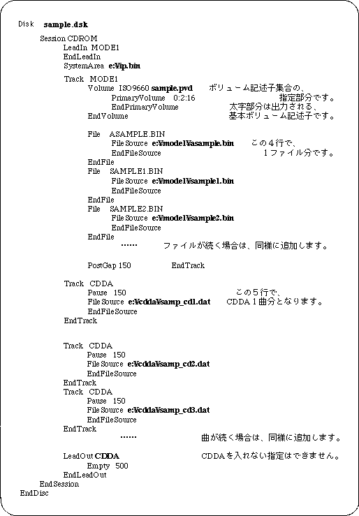

Return to previous page | Return to menu | Go to next page
The pre-processing that is performed to burn all binary files (IP, programs, data, etc.) prepared by the user to CD-ROM is called build. The build creates the TOC information file and disk image file necessary to burn the CD-ROM.
Follow the steps below to build.
Prepare all files to be written to the CD-ROM on the PC disk. The file location is specified in the script file, so it can be anywhere. The file name must be within 12 characters (including the period) with 8 characters and 3 extensions. CDDA files must be in Intel format (little endian). In the case of Motorola format (big endian), perform byte swap. (There is “SWAP.EXE” as a byte swap program for DOS.)
Prepare a work area for generating a CD-ROM disk image. More than the total file capacity is required. All subsequent file creation and execution should be done in this area. (Change the current directory.)
Because it is used as the body of the file name of MS-DOS, make it within 8 characters.
Here, “sample” is used as an example.
Create a script file using an appropriate editor while referring to sample program 1 (List 3-1). The file name should be the project name with the extension “scr”.
Here, it is “sample.scr” .
The directory where the script file is created should be the directory where the "VCDBUILD" command for generating the disk configuration information file and disk image file is executed.
Start the pre-processing program “vcdbuild.exe”.
Here, the parameter is “vcdbuild sample” .
As a result, a disk configuration information file and a disk image file are generated.
Here, “sample.rti” and “sample.dsk” are generated.
Start TOC file generation program “vcdmktoc.exe”. The body part (project name) of the RTI file is given as a parameter.
Here it is “vcdmktoc samle” .
As a result, a TOC file is generated.
Here, “sample.toc” is generated.
